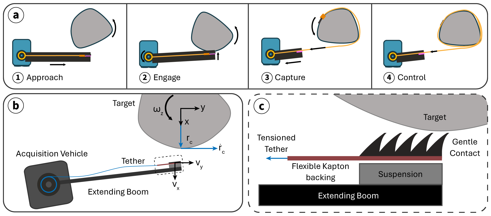

For non-destructive orbital debris capture, de-tumbling is often a necessary step. However, gaining control of objects that are large and rotating with an irregular or unpredictable trajectory is challenging. We present a concept and initial experiments aimed at establishing the feasibility of restraining such objects using a gecko-inspired adhesive attached to a tether: Gecko Lasso. We assume that the adhesive is brought into initial contact by an acquisition vehicle using a lightweight arm or extendable boom. As the object rotates, it wraps the tether around itself, rapidly increasing the maximum permissible tether tension. Experiments with rotating metal cylinders and a small sample of adhesive indicate that gentle attachment is possible for fast-moving targets; tangential velocities up to 1.3 m•s−1 were tested with a 90% success rate. We conclude with a discussion of extensions to take this new concept to the next level of technology readiness.
To de-tumble target debris, Gecko Lasso approaches objects
Description of another part of your project.